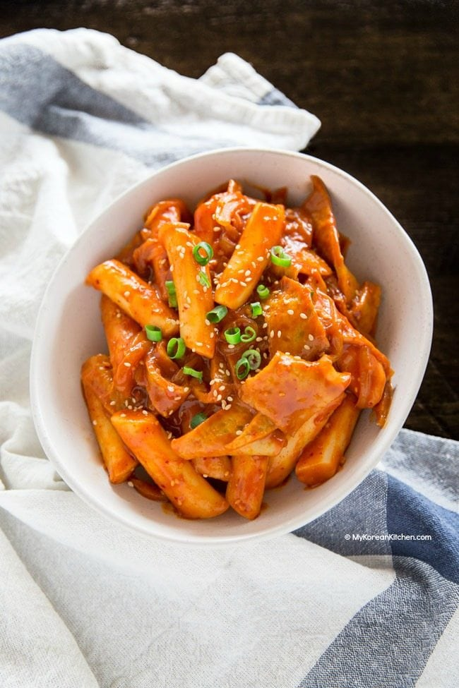

Tteokboki (Spicy Rice Cakes)

Description
Tteokboki is one of the most popular Korean street foods in Korea. Among other things, today's recipe is made with Korean rice cakes, Korean fish cakes, Korean soup stock / dashi stock and gochujang (Korean chili paste)!
It's super delicious, umami rich and highly addictive! So much so that even if your tummy is full, you will still have some room for this spicy rice cakes!
Ingredients
MAIN
- 350g / 12 ounces Korean rice cakes, separated
- 150g / 5.3 ounces Korean fish cakes, rinsed over hot water & Cut into bite size pieces
- 2 cups Korean soup stock (dried kelp and dried anchovy stock)
- 60g / 2 ounces onion, thinly sliced
TTEOKBOKI SAUCE (MIX THESE IN A BOWL)
- 3 Tbsp gochujang (Korean chili paste)
- 1 ½ Tbsp raw sugar
- 1 Tbsp soy sauce
- 1 tsp minced garlic
- 1 tsp gochugaru (Korean chili flakes)
GARNISH
- 1 tsp roasted sesame seeds
- 1 tsp sesame oil
- 1 stalk green onion, finely chopped
Steps
- Unless your rice cakes are soft already, soak them in warm water for 10 mins
- Boil the soup stock in a shallow pot over medium high heat and dissolve the tteokboki sauce by stirring it with a spatula. Once the seasoned stock is boiling, add the rice cakes, fish cakes and onion. Boil them a further 3 to 5 mins until the rice cakes are fully cooked. Then, to thicken the sauce and deepen the flavor, simmer it over low heat for a further 2 to 4 mins.
- Add the sesame oil, sesame seeds, and green onion then quickly stir. Serve warm.